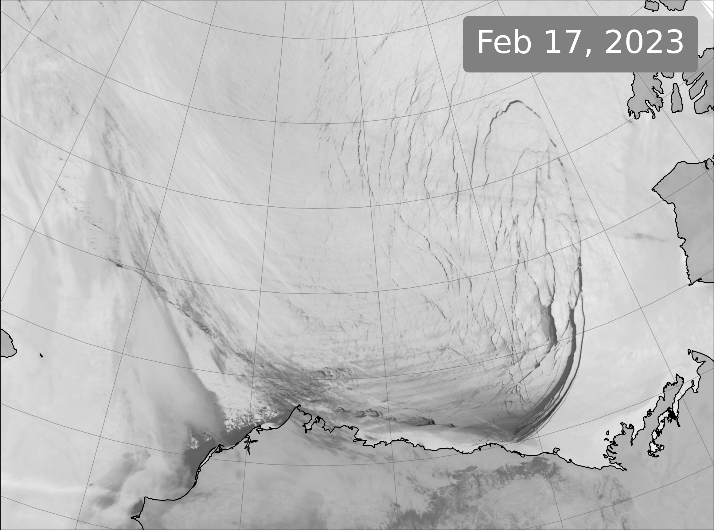

Major fractures a decade apart
In winter 2013, a major break out of the Beaufort Sea ice pack occurred, beginning as seen below with the formation of a large sea ice fracture extening offshore from Point Barrow, Alaska. Almost exactly a decade after the record pack ice breakout of winter 2013, another fascinating coastal sea ice fracture pattern formed in the eastern Beaufort Sea: a Wide Angle Lead extending from the coast near Kaktovik, Alaska.Drag the red slider below to compare satellite images of the sea ice cover in late February 2013 and 2023:

*If the slider is frozen, try refreshing the page!